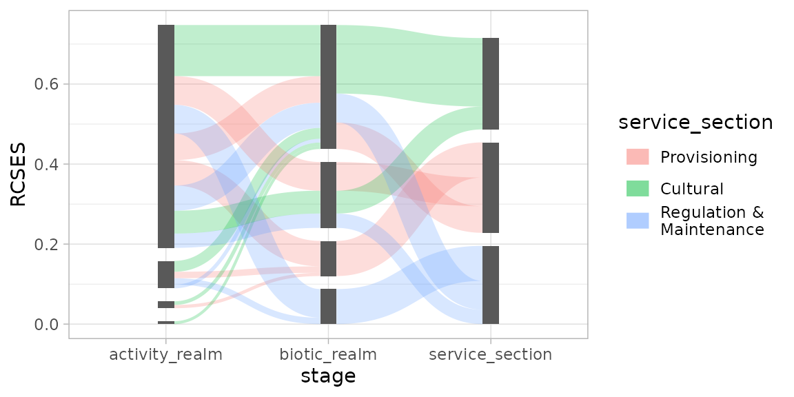
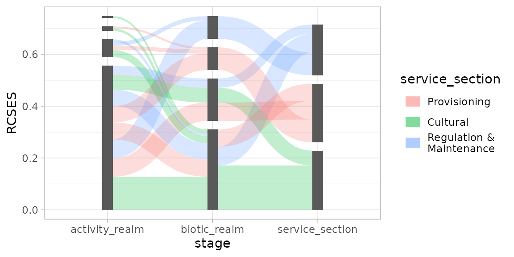
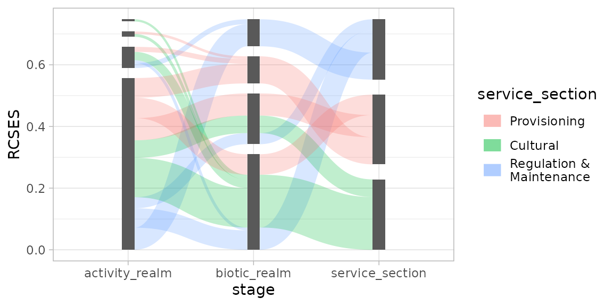
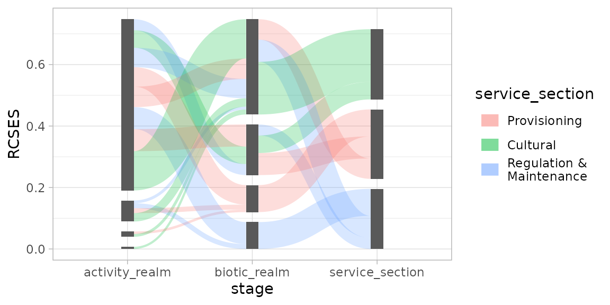

Small to Large (or Vice Versa)
Let’s start by setting up a simple plot to demonstrate stacking order options:
library(ggsankeyfier)
library(ggplot2)
## Let's start with subsetting the data to make it less cluttered
es_sub <-
ecosystem_services |>
subset(RCSES > quantile(RCSES, 0.99)) |>
pivot_stages_longer(c("activity_realm", "biotic_realm", "service_section"),
"RCSES", "service_section")
p <- ggplot(es_sub,
aes(x = stage, y = RCSES, group = node, connector = connector,
edge_id = edge_id))Using position_sankey(), a stacking order can be
specified. Let’s start by demonstrating the ascending order (largest at
the top):
pos <- position_sankey(v_space = "auto", order = "ascending")
p + geom_sankeyedge(aes(fill = service_section), position = pos) +
geom_sankeynode(position = pos)
This will plot the nodes and edges in descending stacking order (largest at the bottom):
pos <- position_sankey(v_space = "auto", order = "descending")
p + geom_sankeyedge(aes(fill = service_section), position = pos) +
geom_sankeynode(position = pos)
More Order Please
Even though the nodes and edges are sorted by their size in the plot
above, it is still hard to read, as the coloured flow going to specific
ecosystem components can end up anywhere and don’t align for incoming
and outgoing edges. This is where order options ascending+
and descending+ come in handy. Before sorting the edges by
size, it will first arrange them by its aesthetics (in case of this
example, the fill colour). Like so:
pos <- position_sankey(order = "descending+", v_space = "auto", align = "justify")
p + geom_sankeyedge(aes(fill = service_section), position = pos) +
geom_sankeynode(position = pos)
As you will notice, the edges with the same fill colour now line up.
Give me the Power
If all of this isn’t enough, you can write your own ordering
function, giving you full power over the stacking order of edges and
nodes. This function should accept 1 argument: data.
position_sankey() will call this function with a
data.frame containing either information about nodes, or
edges. Your custom function should return the same
data.frame, with extra information for the ordering. In
case of nodes, the function should add a column named
node_order, in case of edges, two columns need to be added:
edge_order for outgoing flows, and
edge_order_end for incoming flows.
The example below shows how you can write such a function and how it affects your plot.
## Definition of a custom ordering function:
custom_order <- function(data) {
if ("edge_id" %in% names(data)) { # data contains edge info
## Order incoming edges from big to small
data$edge_order_end <- data$y
## Order outgoing edges from small to big (note minus sign)
data$edge_order <- -data$y
} else { ## data contains node info
data$node_order <- data$y
}
return(data)
}
pos <- position_sankey(v_space = "auto", order = custom_order)
p + geom_sankeyedge(aes(fill = service_section), position = pos) +
geom_sankeynode(position = pos)